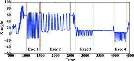

Automated matrix profile
"An Automated Matrix Profile for Mining Consecutive Repeats in Time Series",PriCAI 2018.
[code]
[pdf]
[Presentation]
[Springer]

A key application of wearable sensors is remote patient monitoring, which facilitates clinicians to observe patients non-invasively, by examining the time series of sensor readings. For analysis of such time series, a recently proposed technique is Matrix Profile (MP). While being effective for certain time series mining tasks, MP depends on a key input parameter, the length of subsequences for which to search. We demonstrate that MP’s dependency on this input parameter impacts its effectiveness for finding patterns of interest. We focus on finding consecutive repeating patterns (CRPs), which represent human activities and exercises whilst tracked using wearable sensors. We demonstrate that MP cannot detect CRPs effectively and extend it by adding a locality preserving index. Our method automates the use of MP, and reduces the need for data labeling by experts. We demonstrate our algorithm’s effectiveness in detecting regions of CRPs through a number of real and synthetic datasets.
Anomalies in free weight training
"Detecting unseen anomalies in weight training exercises",AusCHI 2016.
[code]
[pdf]
[Presentation]
[ACM]

In weight training, correct exercise execution is crucial for maximizing its effectiveness and for preventing injuries. However, given the complexity of these movements, it is a challenge for trainees to know whether they are performing the exercise correctly. Considering the fact that wrong moves may result in life long injuries, it is important to design systems that can detect incorrect performances automatically. In this paper, we present a workflow to detect performance anomalies from only observations of the correct performance of an exercise by the trainee. We evaluated our algorithm on a benchmark data set for the biceps curl exercise, and also evaluated our system with a publicly available dataset, and showed that our method detects unseen anomalies in weight lifting exercises with 98 percent accuracy.